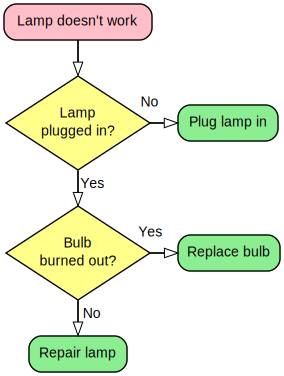

Graphviz Example
The Lamp Flowchart (from Wikipedia )
As part of my experiments to see how far I can coerce Graphviz into making graphs previously made with other tools, I decided to recreate a Flow Chart I came across on Wikipedia.
I managed to get pretty close. I didn't feel like putting in the effort to make everything pixel perfect (same padding, width, height, etc) so some dimensions are slightly off but nothing noticable to the common layman. The one thing that looks ugly and which I haven't been able to fix, is the arrowhead. Currently there is no way to alter the appearance of arrowheads without hacking the source code. So this will have to do.
For some reason I couldn't get Graphviz to actually use the font I
specified in my DOT file, so I resorted to using sed instead to replace the custom font in the
generated SVG with the desired font.
You can compare the results below.

{kind=link}
My Version
This work is licensed under a Creative Commons Attribution-ShareAlike 3.0 Unported License
There were two notable techniques I had to use to get things right.
-
Tweaking the
labelangleandlabeldistanceattributes to get the edge labels in the right place. -
Use
rank = "same"on the question and answer pairs to get them to line up vertically.
The contents of my DOT file is:
digraph Examples_LampFlowChart {
graph [
layout = "dot"
fontnames = "gd"
fontname = "Arial, Sans-Serif"
nodesep = 0.2
]
edge [
arrowhead = "onormal"
arrowsize = 1.35
penwidth = 1.75
labelangle = 45
labeldistance = 2
]
node [
shape = "box"
style = "filled,rounded"
penwidth = 1.35
]
{// Light Red Node
start_LampDoesNotWork [
label = "Lamp doesn't work"
fillcolor = "#FFBFC9"
]
}
{// Light Yellow Nodes
node [
shape = "diamond"
style = "filled"
fillcolor = "#FFFF8A"
fixedsize = true
width = 2
height = 1.3
]
question_LampPluggedIn [label = "Lamp\nplugged in?"]
question_BulbBurnedOut [label = "Bulb\nburned out?"]
}
{// Light Green Nodes
node [fillcolor = "#8BEF91"]
answer_PlugInLamp [label = "Plug lamp in"]
answer_ReplaceBulb [label = "Replace bulb"]
answer_BuyNewLamp [label = "Repair lamp"]
}
start_LampDoesNotWork -> question_LampPluggedIn
question_LampPluggedIn -> question_BulbBurnedOut [taillabel = "Yes"]
question_BulbBurnedOut -> answer_BuyNewLamp [taillabel = "No"]
{// Question node and accompanying answer node
edge [
// Place the edge label in the right place
minlen = 2.5,
labelangle = 90
]
{// Align question node and accompanying answer node
rank = "same"
question_LampPluggedIn -> answer_PlugInLamp [taillabel = "No"]
}
{// Align question node and accompanying answer node
rank = "same"
question_BulbBurnedOut -> answer_ReplaceBulb [taillabel = "Yes"]
}
}
}//Examples_LampFlowChart
And that, as they say, was that.